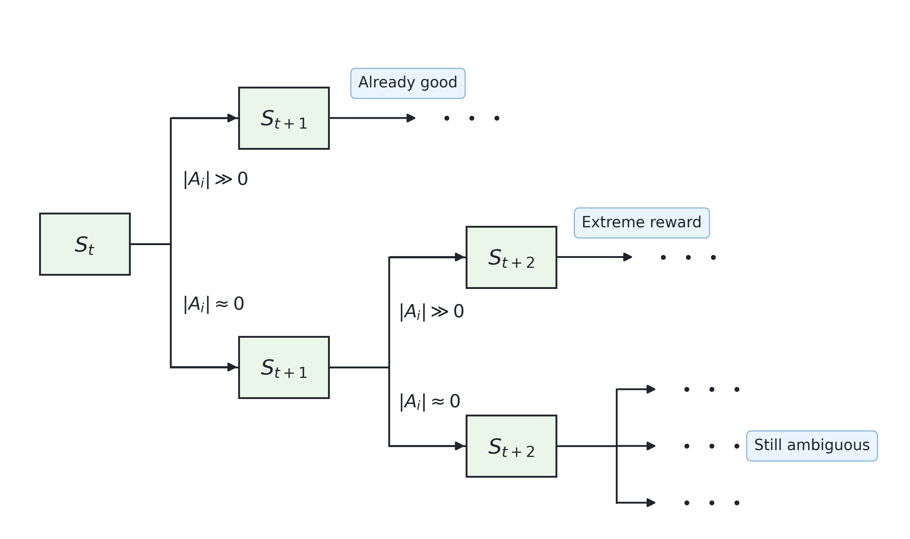
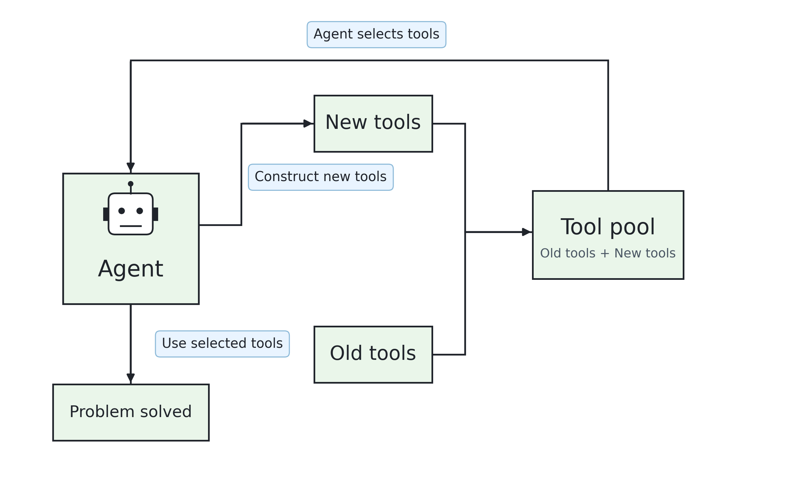
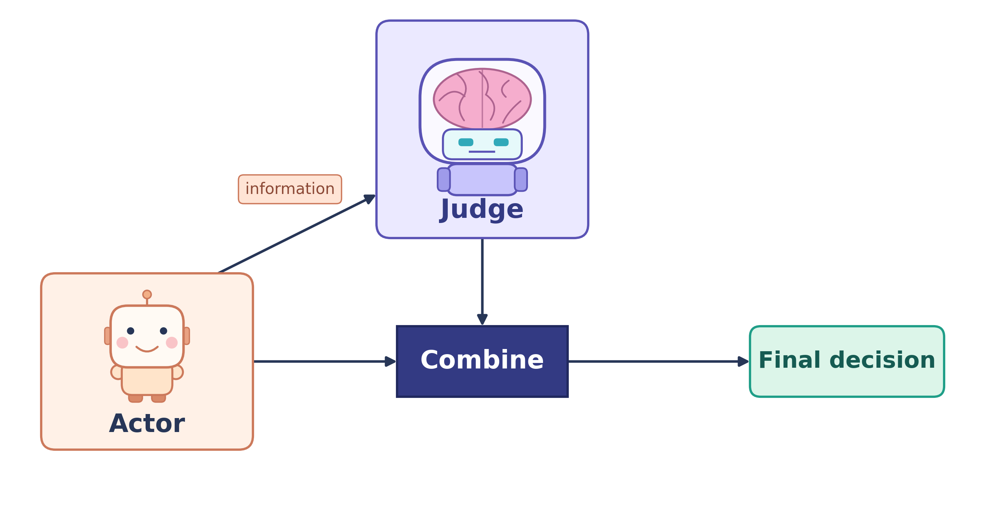

Shuo Zhang
I am a second-year Ph.D. student in the Department of Statistics at the University of Chicago. My current research focuses on large language models (LLMs) and statistics. Before joining the University of Chicago, I completed my undergraduate studies in mathematics at the University of Science and Technology of China.
Interests
My earlier work focused primarily on theoretical research in mathematics and statistics, but my interests have now shifted entirely to LLM research. My current interests center on large language models (LLMs), particularly post-training. I am especially interested in using reinforcement learning to study LLMs and in exploring methods for optimizing them in engineering practice and human-computer interaction.
News

Local Reward Refinement for Long-Horizon Trajectories
I am exploring more precise credit assignment from sparse terminal outcomes in long-horizon language-agent trajectories. The idea compares actions at revisited decision states and applies a gated two-step refinement when first-step credit is ambiguous. Current work focuses on controlled sequential tasks; longer tool-use and code-agent trajectories remain future directions.

Learning an LLM Agent's Harness with GRPO
A research prototype using GRPO and LoRA to train an LLM agent to select and create Python tools for a fixed solver. Real-model experiments are still pending.

Passive-Judge Training and Test-Time Actor–Judge Selection for Code Repair
A framework for multi-step code repair: a private Judge scores Actor actions during training and helps select proposals at test time. GPU experiments are still pending.
Collaboration
Now I am finding computing resources to support my research. If possible, I would be glad to join your research and I am ok to meet every day.